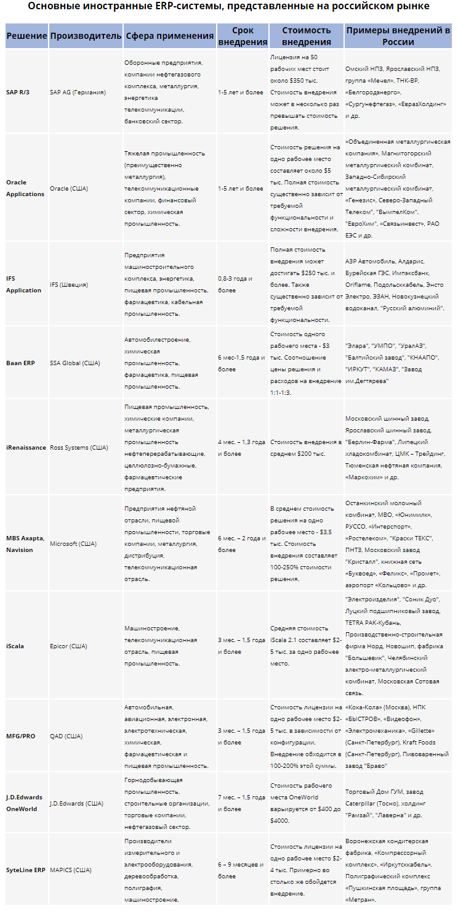

ERP-системы классифицируют по многим признакам. Это и функциональные возможности, и стоимость проекта внедрения (существенное значение имеет отношение стоимость лицензии/стоимость услуги по внедрению). Различают программно-аппаратные платформы, на которых реализована ERP. Кроме того, некоторые эксперты делают попытку классификации систем управления ресурсами предприятия по наличию/отсутствию у продукта отраслевого решения.
На российском рынке ERP-систем присутствует множество поставщиков: как иностранных, так и отечественных. По оценкам экспертов, львиную долю отечественного рынка (свыше 48%) занимает немецкий SAP AG, следом за ним идут продукты Microsoft Business Solution с долей около 13%, а замыкает тройку лидеров компания Oracle, занимающая чуть больше 11% российского рынка ERP-систем. Столь значительный отрыв SAP можно отчасти объяснить тем, что немецкий концерн первым вышел на российский рынок, открыв свое представительство еще в 1992 году. На мировом рынке ситуация несколько иная и основная борьба за лидерство разворачивается между SAP и Oracle.

К плюсам SAP R/3 можно отнести модульность систем, большую функциональную гибкость, наличие интегрированных систем производства и системы проектов. Кроме того, большое преимущество решению дает наличие модулей инвестиционного и финансового менежмента. К минусам относятся сложная документация, высокие требования к аппаратной части, значительная стоимость техподдержки. На сегодняшний день SAP предлагает свое новое решение – интеграционную платформу NetWeaver, которую сам немецкий концерн позиционирует как платформу управления бизнесом.
Главный конкурент SAP – компания Oracle также имеет внушительный послужной список проектов, реализованных на российском рынке. Большое количество продуктов Oracle внедрено на отечественных металлургических предприятиях. Помимо этого, на долю американской компании приходится самый крупный на сегодняшний день ИТ-проект России.
Другая, достаточно хорошо известная на российском рынке система – Baan ERP (на некоторых предприятиях используется устаревшая Baan IV). Решение компании хорошо зарекомендовали себя в автоматизации дискретных производств, в то время как в процессном цикле позиции значительно слабее. Послужной список внедрений Baan в России весьма внушителен и охватывает самые разные сегменты – от машиностроения и нефтегазовой отрасли до пищевой промышленности.
На предприятиях нефтехимической промышленности нередко встречаются решения американской компании Ross Systems – ERP-система iRenaissance. Кроме того, компания имеет множество внедрений в пищевой и целюлозно-бумажной отраслях. В России продукты Ross Systems используются на Липецком хладокомбинате, Московском шинном заводе, в Тюменской нефтяной компании и др.